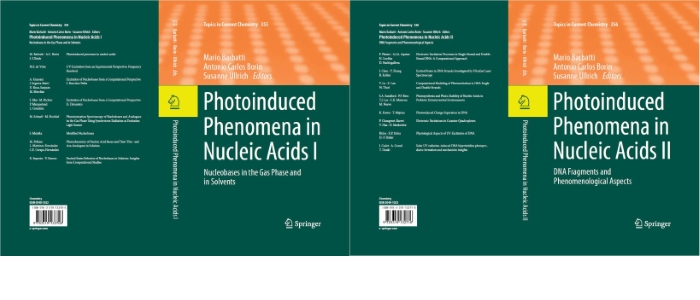

M. Barbatti, A. C. Borin, S. Ullrich: Photoinduced Phenomena in Nucleic Acids I, Top. Curr. Chem. 355, Springer 2015
M. Barbatti, A. C. Borin, S. Ullrich: Photoinduced Phenomena in Nucleic Acids II, Top. Curr. Chem. 356, Springer 2015
C. Z. Bisgaard, H. Satzger, S. Ullrich, A. Stolow: Excited state dynamics of isolated DNA bases: A case study of Adenine, ChemPhysChem 2009, 10, 101.
M. D. Lee, J. D. Coe, S. Ullrich, M.-L. Ho, S.-J. Lee, B.-M. Cheng, M. Z. Zgierski, I-C. Chen, T. J. Martínez, A. Stolow: Substituent effects on Dynamics at Conical Intersections: alpha,beta –enones, J. Phys. Chem. A 2007, 111, 11948.
H. R. Hudock, B. G. Levine, A. L. Thompson, H. Satzger, D. Townsend, N. Gador, S. Ullrich, A. Stolow, T. J. Martínez: Ab Initio Molecular Dynamics and Time-Resolved Photoelectron Spectroscopy of Electronically Excited Uracil and Thymine, J. Phys. Chem. 2007, 111, 8500.
H. Satzger, D. Townsend, M. Z. Zgierski, S. Patchkovskii, S. Ullrich, A. Stolow: Primary processes underlying the photostability of isolated DNA bases: adenine,PNAS 2006,103, 10196.
E.Samoylova, H. Lippert, S. Ullrich, I.V. Hertel, W. Radloff, T. Schultz: Dynamics of photoinduced processes in adenine and thymine base pairs, J. Amer. Chem. Soc. 2005, 127, 1782.
S. Ullrich: Investigation of biomolecular photostability by fs time-resolved photoelectron spectroscopy, LabPlus International (October 2004 issue).
S. Ullrich, T. Schultz, M.Z. Zgierski, A. Stolow: Electronic relaxation mechanism in DNA and RNA bases studied by time-resolved photoelectron spectroscopy, Phys. Chem. Chem. Phys. 2004, 6, 2796. Invited article for special issue on "Bio-active Molecules in the Gas-phase".
S. Ullrich, T. Schultz, M.Z. Zgierski, A. Stolow: Direct observation of electronic relaxation dynamics in adenine via time-resolved photoelectron spectroscopy, J. Amer. Chem. Soc., Communication 2004, 126, 2262.
T. Schultz, S. Ullrich, J. Quenneville, T. J. Martinez, M. Z. Zgierski, A. Stolow: Azobenzene photoisomerization: Two states and two relaxation pathways explain the violation of Kasha's rule. in: Femtochemistry and Femtobiology: Ultrafast Events in Molecular Science, M. M. Martin, J. T. Hynes eds. (Elsevier, Amsterdam 2004) pp. 45-48.
M. Smits, C.A. deLange, S. Ullrich, T. Schultz, M. Schmitt, J.G. Underwood, J.P. Shaffer, D.M. Rayner, A. Stolow: Stable kilohertz-rate molecular beam laser ablation sources, Rev. Sci. Instrum. 2003, 74, 1.
S. Ullrich, K. Müller-Dethlefs: A REMPI and ZEKE spectroscopic study of trans-acetanilide•H2O and comparison to ab initio CASSCF calculations J. Phys. Chem. A 2002, 106, 9188.
S. Ullrich, K. Müller-Dethlefs: A REMPI and ZEKE spectroscopic study of a secondary amid group in Acetanilide, J. Phys. Chem. A 2002, 106, 9181.
X. Tong, S. Ullrich, C.E.H. Dessent, K. Müller-Dethlefs: Intermolecular vibration and internal rotation of a methyl group in acetanilide•Ar: ZEKE photoelectron spectroscopy study, Phys. Chem. Chem. Phys. 2002, 4, 3578.
S. Ullrich, G. Tarczay, X. Tong, K. Müller-Dethlefs: Hydration of a Cationic Amide group: A ZEKE Spectroscopic Study of the trans-Formanilide•H2O Complex, Phys. Chem. Chem. Phys. 2002, 4, 2897.
S. Ullrich, G. Tarczay, X. Tong, M.S. Ford, C.E.H. Dessent, K. Müller-Dethlefs: A REMPI and ZEKE Spectroscopic Study of the trans-Formanilide•Ar van der Waals Cluster, Chem. Phys. Lett. 2002, 351, 121.
S. Ullrich, G. Tarczay, X. Tong, C.E.H. Dessent, K. Müller-Dethlefs: ZEKE Photoelectron Spectroscopy of the Cis- and Trans-Isomers of Formanilide, Ang. Chem. Int. Ed., Communication 2002, 41, 166.
S. Ullrich, G. Tarczay, K. Müller-Dethlefs: A REMPI and ZEKE spectroscopic study of the Phenol×Kr and Phenol•Xe van der Waals complexes., J. Phys. Chem. A 2002, 106, 1496.
S. Ullrich, G. Tarczay, X. Tong, C.E.H. Dessent, K. Müller-Dethlefs: A ZEKE Photoelectron Spectroscopy and Ab Initio Study of the Cis- and Trans-Isomers of Formanilide: Characterizing the Cationic Amide Bond?, Phys. Chem. Chem. Phys. 2001, 3, 5450.
W.D. Geppert, S. Ullrich, C.E.H. Dessent, K. Müller-Dethlefs: Observation of Rotational Isomers II: A ZEKE and Hole-Burning Spectroscopy Study of Hydrogen-Bonded 3-Methoxyphenol•H2O Clusters, J. Phys. Chem. A 2000, 104, 11870.
S. Ullrich, W.D. Geppert, C.E.H. Dessent, K. Müller-Dethlefs: Observation of Rotational Isomers I: A ZEKE and Hole-Burning Spectroscopy Study of 3-Methoxyphenol, J. Phys. Chem. A 2000, 104, 11864.
C.E.H. Dessent, W.D. Geppert, S. Ullrich, K. Müller-Dethlefs: Ionization-induced conformational changes: REMPI and ZEKE spectroscopy of salicyl and benzyl alcohol, Chem. Phys. Lett. 2000, 319, 375.
W.D. Geppert, C.E.H. Dessent, S. Ullrich, K. Müller-Dethlefs: Observation of Hydrogen-Bonded Rotational Isomers of the Resorcinol•Water Complex, J. Phys. Chem. A 1999,103, 7186.
R.F. Delmdahl, S. Ullrich, K.-H. Gericke: Photofragmentation of OClO(Ã2A2ν1ν2ν3)→Cl(2PJ)+O2, J. Phys. Chem. A 1998, 102, 7680.